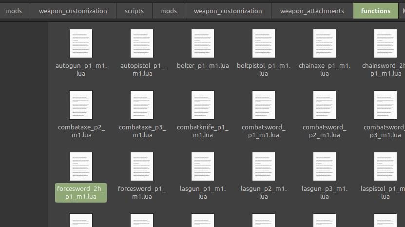

This is a walkthrough on how to make edits to parts from the Extended Weapon Customization (EWC) mod and any of its plugins for Warhammer 40,000: Darktide. I'm assuming you have a cursory knowledge of filesystems and are comfortable with installing mods of Darktide.
Firstly, this will be much easier to follow if you understand how EWC moves attachments. One of the best ways to learn is to join the Darktide Modders Discord, go to the #weapon-customization-mod channel, and scroll way back to the pinned message with the download for the plugin template. Grasmann left a lot of notes in this plugin explaining what flags exist for making parts.
I'll let you go through this yourself, but the tl;dr is that each attachment has an id you give it and a mesh/model taken from the game, and equipping an attachment in a slot in the customization menu causes the mod to search for injected fixes that match the ids of any equipped attachment, which affects how the attachment looks.
Walkthrough
Here's a specific example. I equipped this combination of parts on a Force Greatsword; look at that ugly gap!
This does not spark joy! To fix it, I need to change the position values for the pommel.
Injecting Fixes
After fixes get injected, the mod searches for the first one that matches (from top down). The base mod and plugins will have their own fixes injected, but these are typically written for broad, generic cases. You could create your own fixes, and there's two options for where to keep them:
Directly in one of the plugins
In your own fixes-only plugin
I would ONLY put the fixes in one of the plugins if it's a simple, one-time thing and you're ok with losing it when they update it. You can quickly make a custom plugin using the template; I'll elaborate in this collapsed section. In my example screenshots, I'll be doing it through a separate plugin, but the general idea is the same.
Making a plugin blah blah
Alright, now that you have a place to put the fixes, you need to actually make them. This starts with finding out which combination of parts you're using, then getting the attachment_id for each. Here's the customization options I chose for that Force Greatsword; I'm interested in the grip, pommel, and hilt.
Finding attachment_ids
The first step is figuring out which plugin the attachment came from and making note of it the attachment name.
Generally, the position on the list will tell you which one it's from. It goes base mod --> plugins, in reverse load order.
So if you're using Syn's Edits and the MT plugin, the first options will be from the base mod, then there's the options from the MT plugin, then the options from Syn's plugin. This is because Syn's Edits comes before the MT plugin in the load order.
Some plugins, namely the MT plugin, will have an indicator at the start of the name to clearly distinguish it.
Now that you know the attachment name and which plugin it's from, you can find the attachment_id. Within each plugin, the displayed name and attachment_id are kept in the same place.
For the base mod, this is either in the common files in <Darktide Mods>/weapon_customization/scripts/mods/weapon_customization/weapon_attachments or deeper, within the individual weapon files in functions/. Note that the weapon names are the names based on the code.
For the MT plugin, these are in <Darktide Mods>/weapon_customization_mt_stuff/common/melee.lua and <Darktide Mods>/weapon_customization_mt_stuff/common/ranged.lua. Other plugins based on this will have a similar structure.
Going back to my example, I will start with finding the grip. I see that the name is "Power Sword 4" and it's a base mod attachment, so I'll go look in the weapon_customization mod folder. I go to <Darktide Mods>/weapon_customization/scripts/mods/weapon_customization/weapon_attachments and see common_melee.lua.
Now I'll do a quick search.
Ah! "power_sword_blade_04" I'll make a note of that. Doing the same for the hilt, I find that it's "2h_force_sword_hilt_01". The pommel isn't in this file, so I'll check the individual weapon file.


.png)

.png)